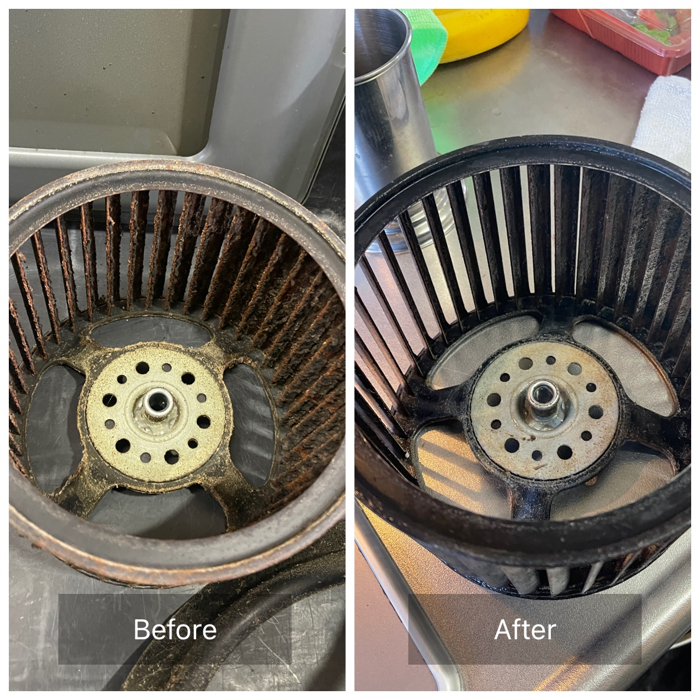
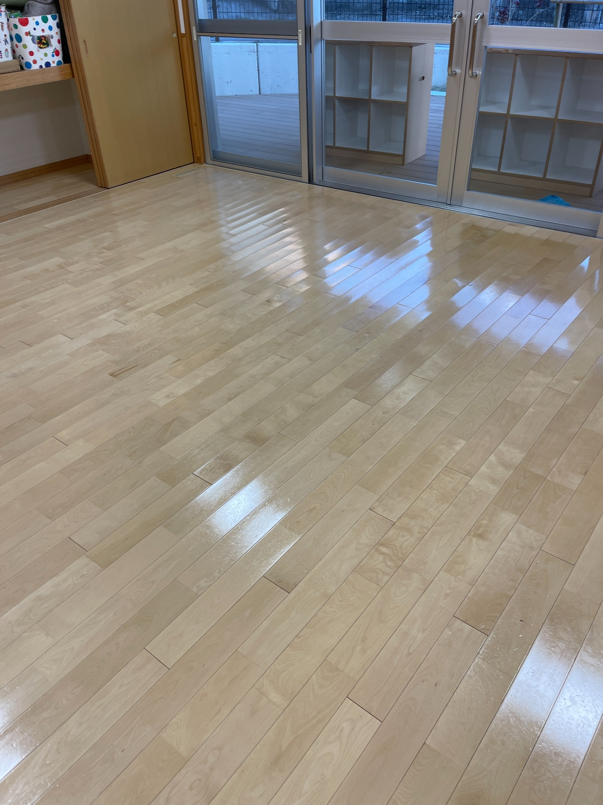
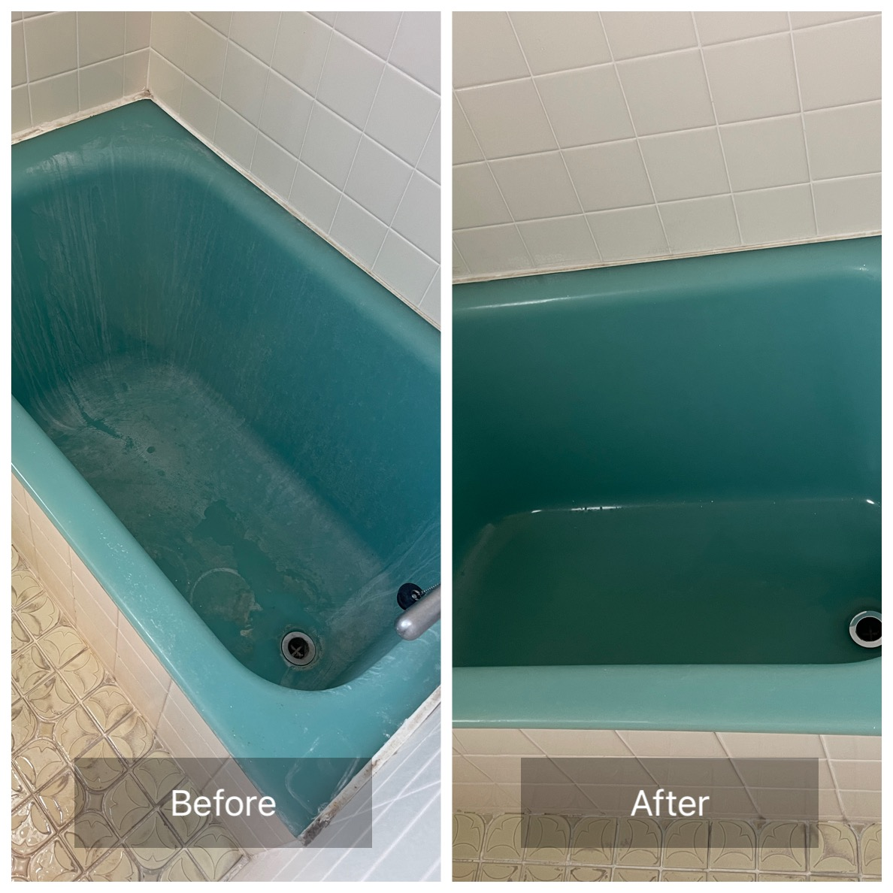
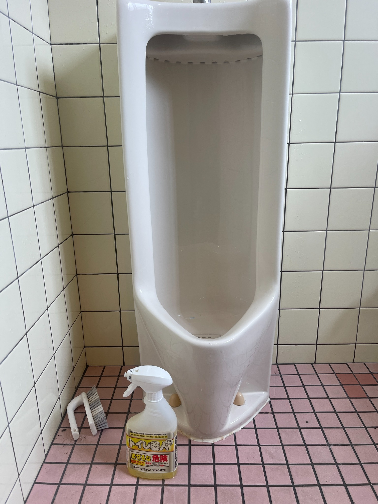
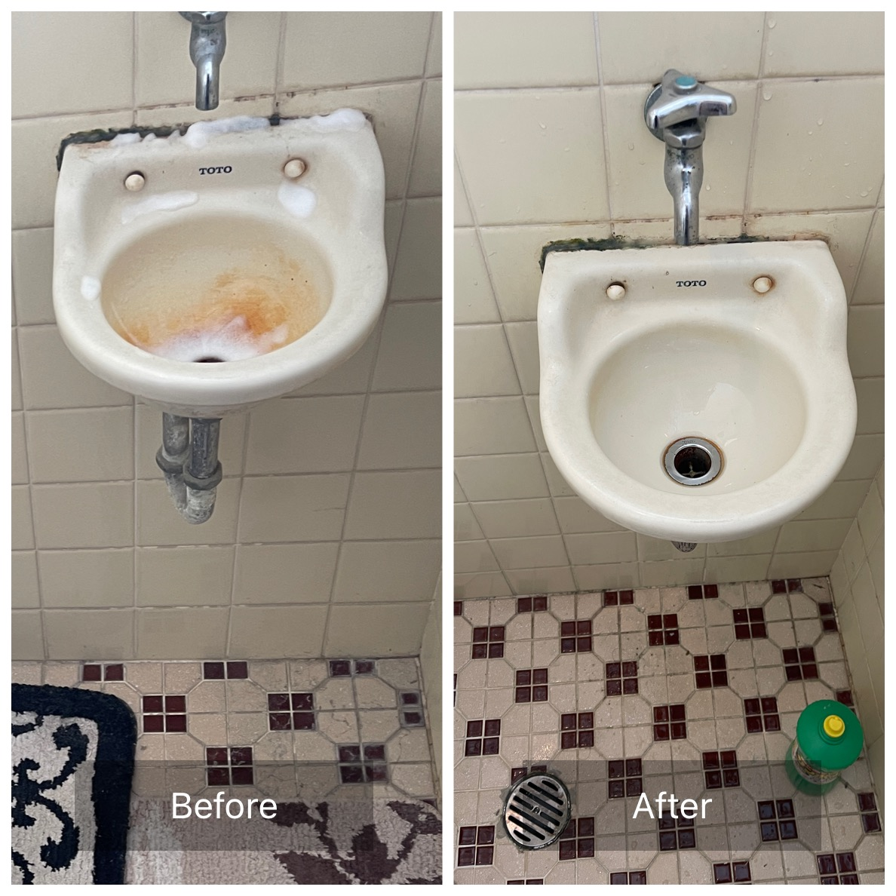
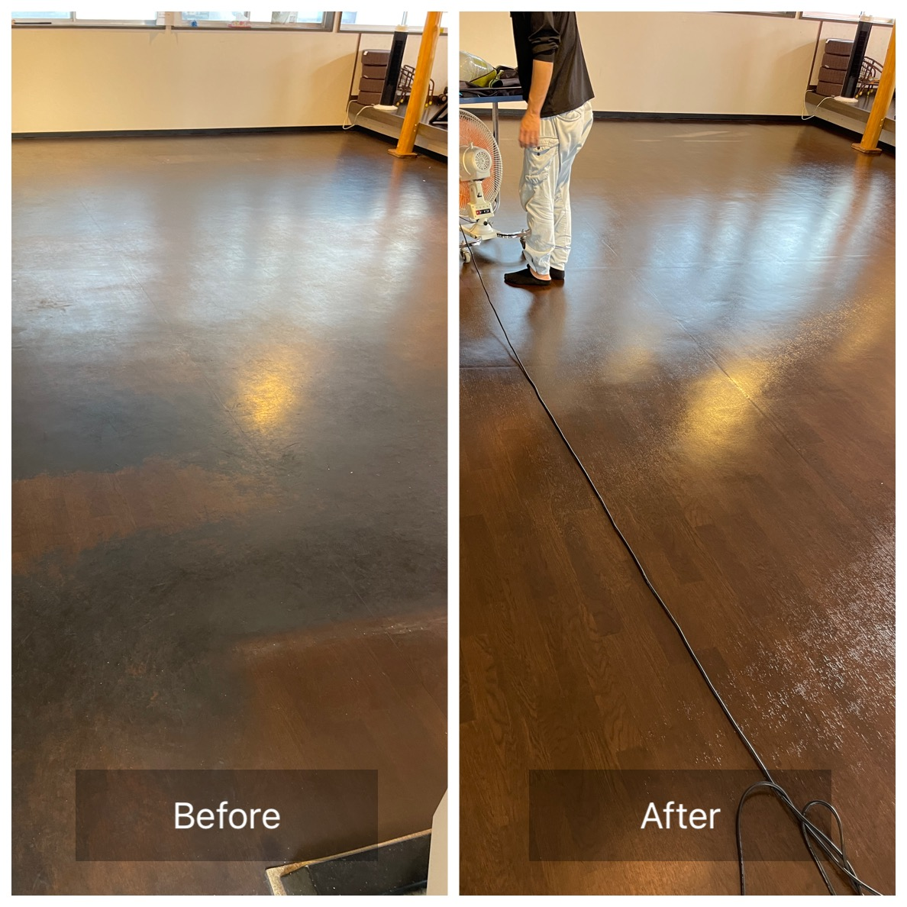
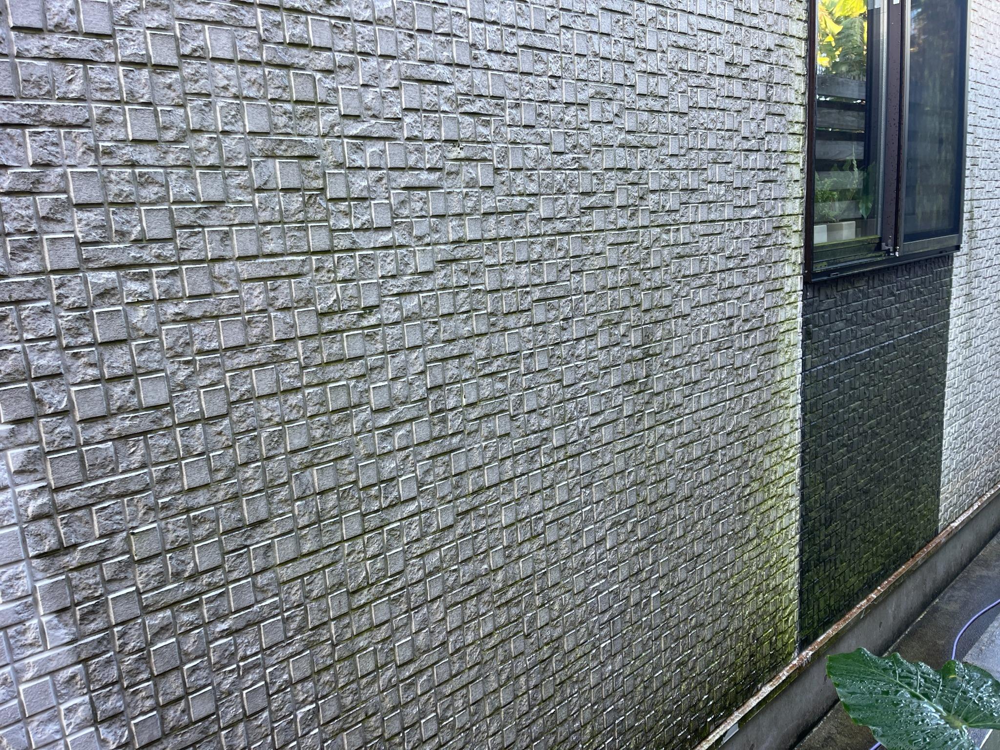
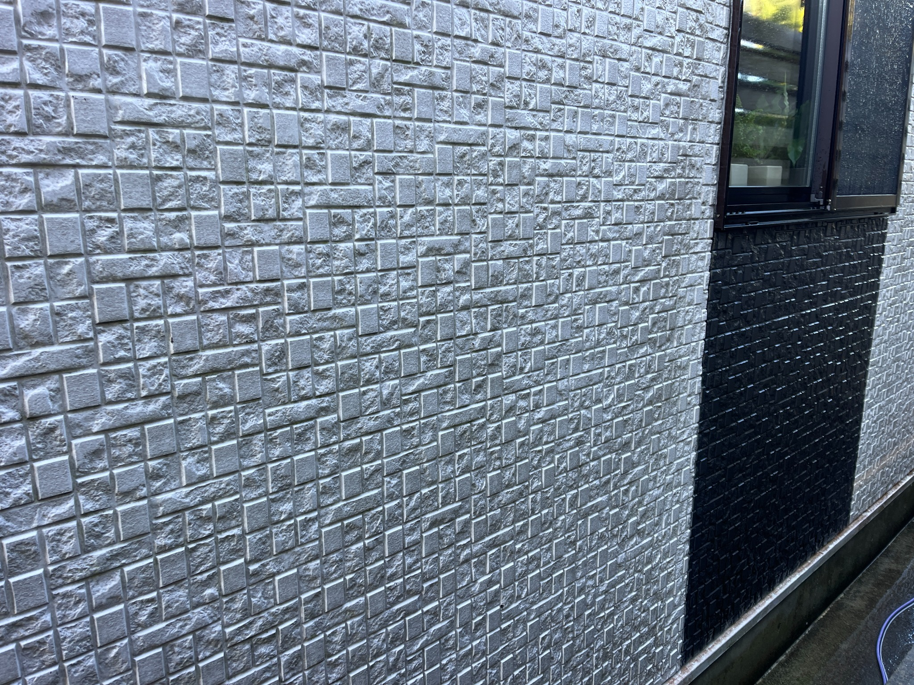
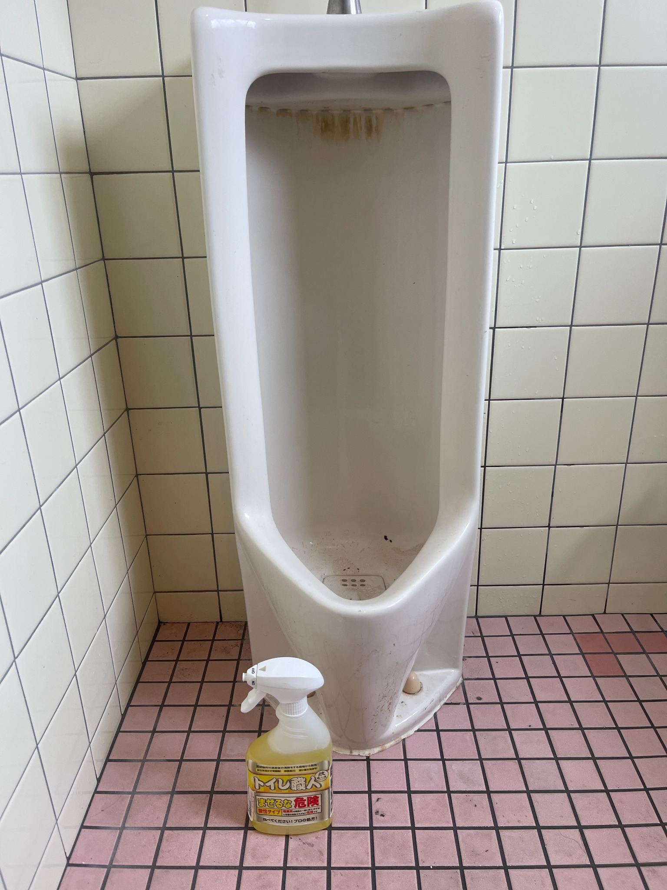

レンジフード分解洗浄
取り外せる部品を分解し、こびり付いた油汚れを専用洗剤で洗浄します。ファンや内部の汚れもご相談ください。
沖縄南部の地域密着ハウスクリーニング
こびり付いた油汚れ、浴室の水あか、床のくすみ。清掃・現場経験17年の代表が、素材と汚れの状態を確認して、必要な場所に合った清掃をご提案します。
気になる場所の写真から、必要な作業と料金の目安をご案内。作業前に内容と料金をお伝えします。

落ちにくい汚れも、素材と汚れの状態を確認したうえで、専用洗剤や業務用機材を使った適切な清掃方法をご案内します。
主力サービス① 水まわり清掃

取り外せる部品を分解し、こびり付いた油汚れを専用洗剤で洗浄します。ファンや内部の汚れもご相談ください。

カビ・水あか・石けんカスなど、種類の違う汚れをそれぞれに合った洗剤で落とします。

便器のフチ裏や床まわりの黒ずみまで丁寧に清掃します。

洗面ボウルの黒ずみや鏡のくもり、蛇口まわりを清掃します。
おすすめ／まとめてお得
一度の訪問で水まわりをまとめて清掃。単品の合計よりお得にご依頼いただけます。
39,800円〜49,800円（税込）
汚れ具合に応じて、作業前に料金を確定します。
主力サービス② 床洗浄・ワックス／フローリングニス
床洗浄＋高耐久ワックス、フローリング水性ウレタンニスを主力メニューとしてご案内します。面積と下地状態を確認し、作業前に料金を確定します。

床面の汚れを洗浄し、十分に乾燥させてから高耐久ワックスを2回塗布します。床の光沢を整え、日常の汚れや摩耗から保護します。
フローリングを洗浄・乾燥させ、透明の水性ウレタンニスを2回塗布して木部表面を保護します。既存の傷・変色・黒ずみが完全に消える施工ではありません。
主力サービス③ 高圧洗浄
ブラシ掃除では落としにくい床面の黒ずみやコケを、高圧洗浄でまとめて洗い流します。
屋外高圧洗浄の施工例（外壁）


床面に付着した黒ずみ、土汚れ、コケなどを洗浄します。
コンクリート床などの広い範囲を、業務用機材で効率よく洗浄します。
面積超過は1㎡あたり880円。水まわりとの同時施工なら高圧洗浄料金から2,200円引き。床の素材・汚れ・排水環境により作業内容が変わるため、写真確認のうえ作業前に確定します。
実際の施工写真をご紹介します。汚れや素材の状態により、仕上がりは異なります。

料金は追加されるのではなく、安くなる方式です。水まわり清掃・高圧洗浄は、標準サイズ・標準作業範囲なら表示された上限価格を超えません。LINEで写真を確認し、汚れが軽い場合は最大20％お値引き。作業前に料金を確定します。
床ワックス・フローリングニスは面積と下地状態で料金が決まり、最大20％OFFの対象外です。汚れ具合による当日の追加料金はありません。
おすすめ
レンジフード／浴室／キッチン／トイレ／洗面台
49,800円 上限
油汚れの多い箇所をまとめて
27,500円 上限
水あか・黒ずみ箇所をまとめて
27,500円 上限
よく依頼される3点セット
39,800円 上限
フィルター・ファン・内部・外装の分解洗浄
16,500円
床・壁・鏡・蛇口・排水口・扉
16,500円
コンロ・シンク・蛇口・扉表面
14,300円
便器・床・周囲
8,800円
洗面ボウル・鏡・蛇口まわり
7,700円
まとめてご依頼の場合
14,300円
トイレと洗面台はそれぞれ1箇所として数えます。固定セットの方が安い場合は、固定セット料金を優先します。
| 箇所数 | 割引 |
|---|---|
| 2箇所 | 単品合計から10％OFF |
| 3箇所 | 単品合計から15％OFF |
| 4箇所 | 単品合計から20％OFF |
| 5箇所 | 固定49,800円 |
税込単価でご案内
550円 /㎡
税込単価でご案内
1,430円 /㎡
10㎡まで
13,200円 上限
1台分まで
11,000円 上限
水まわり・床の清掃に合わせて、エアコンのお手入れをご検討中の方へ。以下はエアコンクリーニングの作業例です。
購入から約2年のエアコンを分解し、送風ファン・ドレンパンの汚れを確認した施工例です。汚れ方は使用環境によって異なります。
南城市・八重瀬町・豊見城市・糸満市・那覇市・南風原町・与那原町を中心に伺っています。清掃の方法や作業範囲も、現場の状態に合わせてご案内します。
レンジフードや浴室などの室内清掃、床ワックス・フローリングニス、ベランダ・駐車場の高圧洗浄を一緒にご相談いただけます。作業ごとに別の業者を探す必要がありません。
送っていただいた写真をもとに、必要な作業と料金をお伝えします。内容にご納得いただいてから作業に入ります。
STEP 1
まずはLINEでお友だち登録をして、メッセージを送ってください。
STEP 2
汚れが気になる場所を撮って送ってください。うまく撮れなくても大丈夫です。
STEP 3
必要な作業と料金、伺える日をお伝えします。ご納得いただいてから決めてください。
STEP 4
当日は道具を持って伺い、清掃します。終わったら一緒に仕上がりを確認します。
施工品質・返金保証
契約した水回り・床・屋外などの清掃箇所、床洗浄・ワックスの施工品質が対象です。
施工完了日から14日以内にLINEまたは電話でお申し出ください。契約範囲内の当社の施工不備は無料で再施工・手直しします。再施工でも改善できない場合、または改善が不可能な場合は、不備のある施工項目の実支払額を基準に返金します。複数台・複数箇所は原則として該当する台数・箇所のみ対象です。
素材の劣化・除去困難な汚れなど、施工不備によらないものは対象外です。 経年劣化・施工範囲外などは対象外です。本制度は法令上のお客様の権利を制限しません。
万一の事故にも備えています。 損害賠償責任保険加入（補償限度額1億円）。保険による補償は契約条件・事故状況によります。施工品質・返金保証とは別制度です。
汚れが気になる場所全体が写った写真と、汚れに近づいた写真の2枚があると分かりやすいです。うまく撮れなくても大丈夫です。届いた写真を見て、追加で確認したい部分をこちらからお伝えします。
はい、大丈夫です。正面と、可能であれば内側が写った写真を送っていただければ、こちらで形状を確認して作業内容をご案内します。判断が難しい場合は追加の写真をお願いすることがあります。
はい、1か所だけのご依頼も承っています。レンジフードのみ、浴室のみといったご相談も可能です。複数箇所をまとめてご希望の場合は、5点セットもあわせてご案内します。
床の素材、劣化の状態、排水の環境によっては、高圧洗浄が向かない場合があります。写真や現地の状況を確認したうえで、洗浄できるかどうかと作業方法をご案内します。
現場の状況により、お客様の水道や電源をお借りすることがあります。使用できるかどうかを事前に確認し、難しい場合の対応方法も含めてご相談のうえ決めさせていただきます。
はい、ハウスクリーニングと同じ日にご依頼いただけます。その場合はセット料金をご案内しますので、台数と設置場所の写真をLINEでお送りください。
作業する場所の周辺にある小物や割れ物を移動していただけると助かります。大きな物の移動が難しい場合は、当日にご相談ください。
記載のエリアを中心に対応していますが、まずはご相談ください。現場の場所と内容を確認し、対応できるかどうかをお伝えします。
ワックスは床表面の光沢と日常的な保護を目的とした定期メンテナンスです。水性ウレタンニスはフローリング木部の表面をよりしっかり保護する仕上げです。床材や既存塗膜によって適した方法が異なるため、写真または現地確認後にご案内します。
通常料金には大型家具移動、既存ワックス・塗膜の剥離、研磨、補修は含まれません。必要な場合は作業前に内容と追加料金をご案内し、ご了承なく追加することはありません。
素材に染み込んだ汚れ、経年劣化による変色や傷など、クリーニングで除去できないものもあります。作業前に対応できる範囲と施工上の限界をご説明します。ただし、契約範囲内の当社の洗浄不足が原因の場合は、施工品質・返金保証に基づき対応します。
ニオイの軽減は期待できますが、素材への染み付きや経年劣化、設置環境などによって、ニオイが残る場合がございます。
また、ニオイの感じ方には個人差があるため、完全除去を保証するものではなく、ニオイの残留のみを理由とした返金は対象外となります。
ただし、当社の洗浄不足が確認された場合は、施工品質・返金保証に基づき、責任を持って対応いたします。
施工完了日から14日以内にLINEまたは電話でお申し出ください。状況・原因を確認し、契約範囲内の当社の施工不備は無料で再施工・手直しします。改善できない場合、または改善が不可能な場合は、該当する施工項目の実支払額を基準に返金します。複数台・複数箇所は原則として該当部分のみ対象です。
14日間は自主返金保証のお申し出期間です。法令上のお客様の権利を制限するものではありません。
LINEまたは電話で状況をお知らせください。原因を確認し、当社の施工に起因する故障・破損は適切に対応します。損害賠償責任保険による補償は契約条件・事故状況によります。施工品質・返金保証とは別制度です。
経年劣化や当社の施工と無関係な故障は自主返金保証の対象外です。法令上のお客様の権利を制限するものではありません。
上記エリアを中心に伺っています。その他の地域も相談可能です。まずはLINEでご相談ください。
水まわり・床・屋外の清掃を一つの窓口で。水まわり清掃または高圧洗浄と同日のエアコンクリーニングは、専用LP掲載価格から1台あたり1,000円引き。必要な作業と料金を事前に提示し、当日の無断追加料金は行いません。
作業前に内容と料金をご案内します